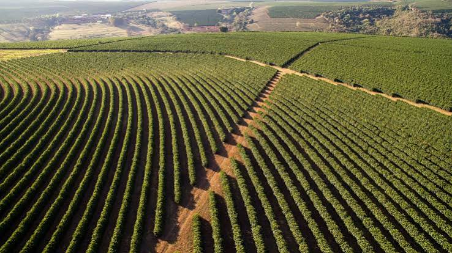

Welcome to Green Hills Coffee Plantation.
A coffee plantation is a piece of land where coffee plants are grown and it is also an important crop grown in many countries, including Kenya. Coffee plants need good soil, enough rainfall, and a suitable climate to grow well. Coffee plantations play a vital role in local economies, sustainable farming practices, and the global trade that fills millions of cups every day. Farmers take care of the plants by removing weeds, adding manure, and protecting them from pests and diseases.

Coffee Varieties
- Arabica
- Robusta
- Batian
- Ruiru 11
Coffee Production Stages
- Planting
- Cultivating the plants
- Harvesting the coffee cherries
- Processing and drying
- Packaging
Coffee Plantation Activities
- Pruning:
- Removing selected branches to encourage healthy growth and improve airflow and sunlight around the coffee plants.
- Harvesting:
- Picking ripe coffee cherries from the plants, usually by hand or with harvesting equipment.
- Drying:
- Reducing moisture in the harvested coffee beans, often by spreading them in the sun or using a mechanical dryer.
Contact
You can reach us through:
Phone:+254 700070104